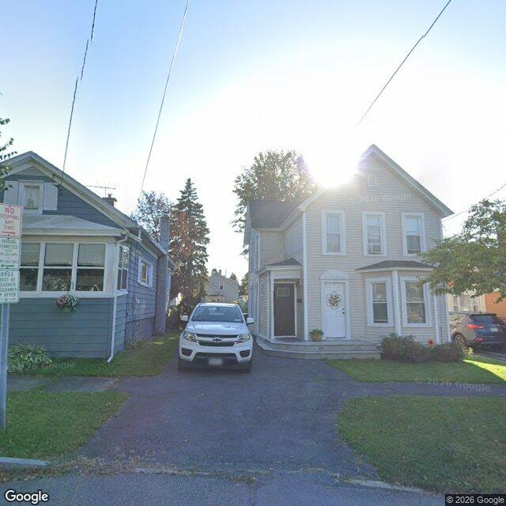

Property entry
147 Dale St
Published 2026-11-15T13:04:47+00:00
Parcel key: 005-03-280

City records
Matches use parcel IDs or normalized property addresses. Nearby properties are not treated as matches. Records may include historical or closed cases; check each record's status and dates. Publication dates are not source-data dates.
Vacant properties 0
No matches stored for this feed. The feed or address matching may be incomplete; this is not confirmation that no records exist.
Records refreshed 2026-11-11.
Rental registry 0
No matches stored for this feed. The feed or address matching may be incomplete; this is not confirmation that no records exist.
Records refreshed 2026-11-11.
Code violations 1
- Latitude
- 43.07585729
- Longitude
- -76.14411037
- Neighborhood
- Court-Woodlawn
- ObjectId
- 149351
- SBL
- 005.-03-28.0
- complaint_address
- 147 Dale St
Records refreshed 2026-11-11.
Unfit properties 0
No matches stored for this feed. The feed or address matching may be incomplete; this is not confirmation that no records exist.
Records refreshed 2026-11-11.
AI image observations (unverified)
These observations are generated from an image, not an inspection or an official code finding. No human verification is recorded here.
Image capture date: Not recorded. The entry publication date does not establish the age of the image.
Automated image description
The property features a well-maintained two-story light-sided residential building with intact windows, doors, entry steps, and a tidy paved driveway.
Property type guess: single_family
Visible conditions
- Light vinyl or painted wood siding appears intact and well maintained.
- Windows and primary front entry door are fully intact with no visible damage.
- Front entrance steps and small porch platform appear structurally sound.
- Lawn and foundation plantings are neatly maintained.
- Paved driveway is clear of debris or major decay.
Condition scores
- Porch Or Entry
- good
- Roof
- fair
- Siding Or Facade
- good
- Trash Debris
- none_visible
- Vegetation Overgrowth
- none_visible
- Windows Doors
- good
- Yard Or Lot
- good
Visible flags
- Active Construction Visible
- no
- Boarded Windows Or Doors
- no
- Fire Damage Visible
- no
- Structural Damage Visible
- no
- Vacancy Signs Visible
- no
Possible image-only flags
- No items reported.
AI review boxes
- No items reported.
Review reasons
- No items reported.
Image quality
- Available
- True
- Bytes
- 61173
- Needs Rerun
- False
['Direct sunlight and roofline glare slightly obscure full view of the roof peak.', 'The recorded code violation cannot be identified from visible exterior street-level conditions.']
ACS tract context
Census Tract 4; Onondaga County; New York
- Housing units
- 1534
- Median gross rent
- 130600
- Median household income
- 66250
- Poverty rate
- 27.6
- Renter-occupied share
- 71.7
- Total population
- 4042
- Vacancy rate
- 4.6
OpenStreetMap nearby
60 meter search radius
Nearby map data is temporarily unavailable. This does not mean there are no mapped features.